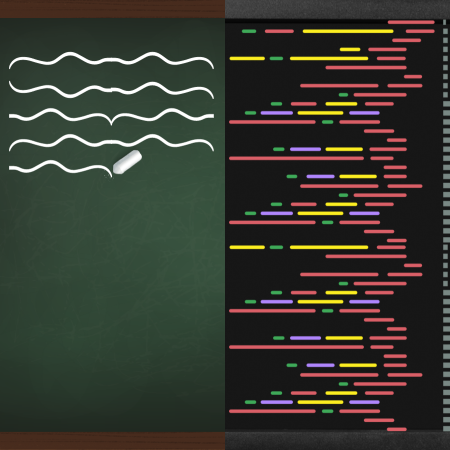

CAPÍTULO 7
APRENDIZADO CONTÍNUO E REQUALIFICAÇÃO
Por Eduardo Rodrigues
Ouvir o conteúdo da página.
No atual momento do mundo do trabalho, marcado por rápidas transformações tecnológicas e mudanças nos modelos de negócios, o aprendizado contínuo é fundamental para acompanhar o ritmo acelerado das mudanças tecnológicas e das demandas do mercado de trabalho. Através do aprendizado contínuo, os profissionais podem adquirir novas habilidades, atualizar seus conhecimentos e se manter relevantes em suas áreas de atuação. Além disso, o aprendizado contínuo promove a capacidade de adaptação, a criatividade e a inovação, características cada vez mais valorizadas pelas empresas.
A requalificação consiste na aquisição de novas habilidades ou na atualização das habilidades existentes para se adaptar a novas funções ou setores de trabalho. À medida que certas profissões se tornam obsoletas devido à automação e à inteligência artificial, a requalificação se torna uma estratégia crucial para permitir a transição dos profissionais para novas carreiras promissoras.
A tecnologia desempenha um papel fundamental na oferta de oportunidades de aprendizado e capacitação aos funcionários. Abaixo estão alguns exemplos de como a tecnologia pode ser utilizada para esse fim:
- Plataformas de aprendizado: Plataformas online de aprendizado oferecem cursos, treinamentos e materiais educacionais em uma variedade de áreas. Os funcionários podem acessar essas plataformas de qualquer lugar e a qualquer momento, permitindo que eles desenvolvam habilidades relevantes para seu trabalho atual ou futuras oportunidades.
- Realidade virtual e realidade aumentada: Essas tecnologias imersivas podem simular ambientes de trabalho realistas, permitindo que os funcionários pratiquem habilidades e procedimentos sem riscos. Por exemplo, um profissional de saúde pode treinar procedimentos cirúrgicos complexos em um ambiente virtual antes de realizá-los em pacientes reais.
- Inteligência artificial e análise de dados: A Inteligência artificial e a análise de dados podem fornecer insights personalizados sobre as necessidades de aprendizado de cada funcionário. Com base nessas informações, programas de treinamento individualizados podem ser desenvolvidos, atendendo às necessidades específicas de cada pessoa.
- Gamificação: A gamificação é o uso de elementos de jogos em contextos não lúdicos, como o treinamento corporativo. Isso torna o aprendizado mais envolvente e motivador, incentivando os funcionários a adquirirem e aprimorarem habilidades.
O aprendizado contínuo e a requalificação são elementos indispensáveis para enfrentar os desafios do futuro do trabalho. À medida que a tecnologia continua a evoluir e a transformar os ambientes de trabalho, os profissionais devem se adaptar e se capacitar constantemente para se manterem relevantes e competitivos.
A tecnologia desempenha um papel crucial ao oferecer oportunidades de aprendizado e capacitação. Através de plataformas de aprendizado, realidade virtual, inteligência artificial e gamificação, os funcionários podem acessar conteúdos educacionais, simular situações de trabalho, receber treinamento personalizado e se engajar de maneira mais efetiva no processo de aprendizado.
Portanto, investir no aprendizado contínuo e no reskilling não apenas beneficia os indivíduos, permitindo que eles se adaptem às demandas do mercado, mas também traz vantagens para as empresas, que podem contar com uma força de trabalho atualizada, inovadora e capaz de lidar com os desafios do mundo empresarial em constante mudança.
À medida que avançamos em direção a um futuro cada vez mais tecnológico e dinâmico, o aprendizado contínuo e o reskilling se tornam um investimento essencial para o desenvolvimento profissional e pessoal. Aqueles que abraçam essa mentalidade de aprendizado constante estarão preparados para enfrentar os desafios do futuro e aproveitar as oportunidades que surgem em um mundo em constante evolução.